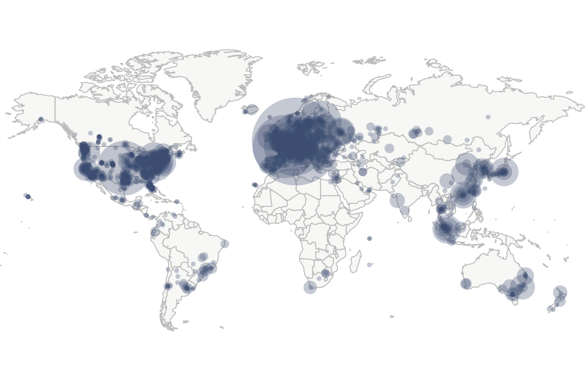

Các điểm Node là gì ?
Các hệ thống lưu trữ dữ liệu hiện tại không quá tốt vì hầu hết các dữ liệu đều được lưu bằng 1 bản duy nhất để cho tiện việc duy chuyển và bảo quản, và nếu có cái các tai nạn xảy ra, khả năng mất toàn bộ dữ liệu sẽ xảy ra.
Cơ chế lưu dữ liệu của blockchain nhận thấy được yếu điểm của việc này nên đã sao chép và phân tán dữ liệu trên toàn các máy đào, mà các máy đào thì phân bố trên toàn thế giới, việc bị mất toàn bộ dữ liệu là chuyện không thể, vì khi một máy đào khởi chạy thì dữ liệu được sao chép vào máy đào đó.
Các node của Bitcoin được phân bố như thế nào?
Phía trên là bản đồ các điểm node của Bitcoin trên toàn thế giới, có thể đã thay đổi chút ít sau cuộc đàn áp Bitcoin ở Trung Quốc hồi tháng 9/2021. Những điểm node này cho ta thấy rất rõ những điểm node, những nơi tập trung cao những máy đào.
Các điểm node chống tình trạng làm giả?
Đúng! Những điểm node này sao lưu lại dữ liệu giao dịch, nên nếu một thông tin bị làm giả thì các máy trên thế giới sẽ “thẩm định lại” và nếu sai thì nó sẽ gạch ra khỏi mạng lưới, giao dịch sẽ không xảy ra, và tránh làm giả, các giao dịch sẽ minh bạch.